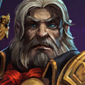
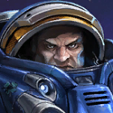
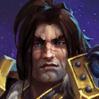
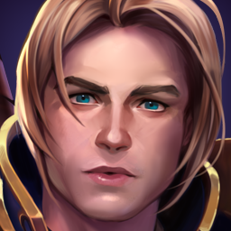
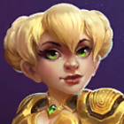
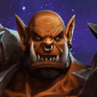

Characters
Heroes of the Storm has a vast variety of characters with their own unique abilities that modify the game meta dramatically depending on each team's composition. Strong players can counter the effects of unbalanced characters on other teams - but only to an extent.
Character List
| Avatar | Name | Role | Game | Brief Description |
|---|---|---|---|---|
| Tyrael | Tank | Diablo | Tyrael is a disengage tank - very tricky. | |
| Illidan | Assassin | Diablo | Illidan is a melee assassin that requires hard engages and quick escapes. | |
| Sonya | Bruiser | Diablo | Sonya is a melee bruiser that requires hard engages - attack hard, no fear. | |
| Kael'thas | Assassin | Warcraft | Kael'thas is a ranged assassin that has high AoE attacks and high burst damage. | |
| Tyrande | Support | Warcraft | Tyrande is a ranged support that can heal via constistant auto-attacks. | |
| Kel'Thuzad | Assassin | Warcraft | Kel'Thuzad is a ranged assassin that requires high skill and timing to chain enemies into AoE roots. | |
| Ana | Support | Overwatch | Ana is a ranged support that heals via sniping darts. | |
| Li Li | Support | Warcraft | Li Li is a ranged support that moves quickly and blinds enemies. | |
| Brightwing | Support | Warcraft | Brightwing is a ranged support that can teleport to allies and heal allies surrounding them. | |
| Whitemane | Support | Warcraft | Whitemane is a ranged support that can burst heal allies at great expense to mana. Proper building results in strong sustain. | |
| Hanzo | Assassin | Overwatch | Hanzo is a ranged assassin that can burst damage enemies with good aim. | |
|  | Greymane | Assassin | Warcraft | Greymane is a ranged/melee assassin hybrid that can poke enemies and take them down when they're low HP. |
| Hogger | Bruiser | Warcraft | Hogger is a melee bruiser that can smack enemies around and run away when he has low HP. | |
| Raynor | Assassin | Starcraft | Raynor is a ranged assassin that is easy to pick up but has a high skill cap. | |
| E.T.C. | Tank | Warcraft | E.T.C. is a engage/disengage tank that can knock enemies back and heal himself. | |
| Abathur | Support | Starcraft | Abathur is a remote support that can clone allies and co-play to strengthen them. | |
 |
Diablo | Tank | Diablo | Diablo is a engage/disengage tank that can slam enemies into walls. Forces enemies to carefully calculate their engages. |
| The Lost Vikings | Bruiser | Warcraft | The Lost Vikings are 3 separate bruisers that can split up and farm XP. Requires high skill to play. | |
| Rexxar | Bruiser | Warcraft | Rexxar is a melee bruiser that can poke enemies with his bear Misha as well as heal her. 2 characters at once. | |
| Auriel | Support | Diablo | Auriel is a ranged support that can heal allies based on their damage they deal to the opposing team. | |
|  | Tychus | Assassin | Starcraft | Tychus is a ranged assassin that can burst damage enemies with his minigun, which deals percent damage. |
| Mal'Ganis | Tank | Warcraft | Mal'Ganis is a engage/disengage tank that can heal himself and sleep his enemies. Requires skilled engages. | |
| Kharazim | Support | Diablo | Kharazim is a melee support that can heal allies and himself. Must consistently attack enemies in order to heal. | |
| Lt. Morales | Support | Starcraft | Lt. Morales is a ranged support that can heal allies consistently over time. Can also interrupt enemies with her grenade. | |
| Samuro | Assassin | Warcraft | Samuro is a melee assassin that can teleport to allies and deal burst damage. Requires high skill to play. | |
| Zul'jin | Assassin | Warcraft | Zul'jin is a ranged assassin that can burst damage enemies with his axe. Recently nerf'd. | |
| D.Va | Bruiser | Overwatch | D.Va is a melee bruiser that can poke enemies with her mech. Has high sustain and a timed self destruct with a large AoE. | |
| Genji | Assassin | Overwatch | Genji is a melee assassin that can burst damage enemies with his shurikens, shield, and slice. | |
| Blaze | Tank | Starcraft | Blaze is an engage tank with high self-sustain and damage reduction. | |
| Johanna | Tank | Warcraft | Johanna is a engage/disengage tank that can blind, stun, and slow enemies. Has high HP and lots of escape. | |
| Sylvanas | Assassin | Warcraft | Sylvanas is a ranged assassin that can burst damage enemies with her auto-attacks and silencing arrow. | |
| Valla | Assassin | Diablo | Valla is a ranged assassin that can burst damage enemies with her auto-attacks and multi-shot. | |
| Stukov | Support | Starcraft | Stukov is a ranged support that can burst heal allies and silence enemies with his AoE. | |
| Zarya | Bruiser | Overwatch | Zarya is a melee bruiser that can poke enemies with her laser and can shield herself/allies. Has high sustain and utility. | |
| Orphea | Assassin | Heroes (Original) | Orphea is a ranged assassin that can burst damage enemies with her AoE and self-sustain. | |
| Qhira | Bruiser | Heroes (Original) | Qhira is a melee bruiser that can poke enemies with her whip and self-sustain. | |
| Leoric | Tank | Diablo | Leoric is a melee bruiser that sap health from enemies and quick escape. | |
| Stitches | Tank | Diablo | Stitches is a engage/disengage tank that can hook enemies from afar and heal himself. | |
|  | Varian | Tank/Bruiser/Assassin | Warcraft | Varian is a melee tank/bruiser/assassin that can poke enemies with his sword and self-sustain. High flexibility. |
|  | Anduin | Support | Warcraft | Anduin is a ranged support that can heal multiple allies and root enemies. |
| Chen | Bruiser | Warcraft | Chen is a melee bruiser that can poke enemies with his barrel and high self-sustain. | |
| Uther | Support | Warcraft | Uther is a melee support that can defend/heal allies and stun enemies. | |
| Deathwing | Bruiser | Warcraft | Deathwing is a melee bruiser that can poke/stun enemies with his breath. Cannot be crowd controlled. | |
| Medivh | Support | Diablo | Medivh is a ranged support that can shield allies and teleport them to safety. | |
| Deckard Cain | Support | Diablo | Deckard Cain is a ranged support that can heal allies and slow/root enemies with his AoE. | |
| Xul | Bruiser | Diablo | Xul is a melee bruiser that can poke enemies with his scythe and self-sustain with his cursed strikes. | |
| Artanis | Bruiser | Starcraft | Artanis is a melee bruiser that can hard engage enemies and swap positions with them. | |
| Mephisto | Assassin | Diablo | Mephisto is a ranged assassin that can burst damage enemies with his lightning ring and skull missile. | |
| Tassadar | Assassin | Starcraft | Tassadar is a ranged assassin that can burst damage enemies with his lightning. | |
| Butcher | Assassin | Diablo | Butcher is a melee assassin that can burst damage enemies with his cleaver. Has a character quest that rewards conservative play to start. | |
| Murky | Assassin | Warcraft | Murky is a melee assassin that can burst damage enemies with his slime and self-sustain. Unique with low HP but short respawn times and custom spawn location. | |
| Arthas | Tank | Warcraft | Arthas is a melee tank that can poke enemies with his green ghost and self-sustain. | |
| Sgt. Hammer | Assassin | Starcraft | Sgt. Hammer is a ranged assassin that has high/long range damage but low mobility. | |
| Zeratul | Assassin | Starcraft | Zeratul is a sealth assassin that can burst damage enemies with his blink and self-sustain. | |
| Nova | Assassin | Starcraft | Nova is a stealth-ranged assassin that can burst damage enemies with her sniper rifle. | |
| Valeera | Assassin | Warcraft | Valeera is a stealth melee assassin that can burst damage enemies with her dagger and quick disengage. | |
| Kerrigan | Assassin | Starcraft | Kerrigan is a melee assassin that can stun and root enemies. | |
| Imperius | Bruiser | Diablo | Imperius is a melee bruiser that can poke/stun enemies with his spear. High skill requirement. | |
| Jaina | Assassin | Warcraft | Jaina is a ranged assassin that can damage enemies with her frostbolt and blizzard AoE. | |
 |
Cho'Gall | Tank/Assassin | Warcraft | Cho'Gall is a melee tank/assassin that can poke enemies with his AoE and self-sustain. Requires 2 players to play. |
| Gazlowe | Bruiser | Warcraft | Gazlowe is a melee bruiser that can poke enemies with his deployed turrets. | |
| Probius | Assassin | Starcraft | Probius is a ranged assassin that can damage enemies with his warp-in turrets and rift AoE. | |
| Junkrat | Assassin | Overwatch | Junkrat is a ranged assassin that can damage and displace enemies with his grenades and traps. | |
| Malthael | Assassin | Diablo | Malthael is a melee assassin that can damage enemies with his scythe and self-sustain. Highly effective against tanks. | |
| Zagara | Assassin | Starcraft | Zagara is a ranged assassin that can damage enemies with her banelings and creep. | |
| Azmodan | Assassin | Diablo | Azmodan is a ranged assassin that can damage enemies with his laser and minions. | |
| Cassia | Assassin | Diablo | Cassia is a ranged assassin that can damage enemies with her javelin and blind. | |
| Tracer | Assassin | Overwatch | Tracer is a ranged assassin that can damage enemies with her pulse bomb and blink. | |
| Nazeebo | Assassin | Diablo | Nazeebo is a ranged assassin that can damage enemies with his spiders and toads. Has a character quest that grants max HP/MP. | |
| Lunara | Assassin | Warcraft | Lunara is a ranged assassin that can damage enemies with her poison and self-sustain. | |
| Li-Ming | Assassin | Diablo | Li-Ming is a ranged assassin that can burst damage enemies with her arcane orb and missiles. | |
| Gul'dan | Assassin | Warcraft | Gul'dan is a ranged assassin that can burst damage enemies with his fel flame and self-sustain. | |
| Fenix | Assassin | Starcraft | Fenix is a ranged assassin that can burst damage enemies with his laser and self-sustain. | |
| Falstad | Assassin | Warcraft | Falstad is a ranged assassin that can burst damage enemies with his hammer and lightning. | |
|  | Chromie | Assassin | Warcraft | Chromie is a ranged assassin that can burst damage enemies with her time trap and sand blast. High range. |
| Maiev | Assassin | Warcraft | Maiev is a melee assassin that can poke enemies with her warden's cage and enemy displacement. | |
| Alarak | Assassin | Starcraft | Alarak is a melee assassin that can poke enemies with his lightning and high burst damage. | |
| Lucio | Support | Overwatch | Lucio is a ranged support that can heal allies and speed them up. | |
| Alexstrasza | Support | Warcraft | Alexstrasza is a ranged support that can heal allies and burst damage enemies with her dragon form. | |
| Yrel | Bruiser | Warcraft | Yrel is a melee tank that can poke enemies with her hammer and self-sustain. | |
| Ragnaros | Bruiser | Warcraft | Ragnaros is a melee bruiser that can poke enemies with his lava wave and self-sustain. | |
 |
Anub'arak | Tank | Warcraft | Anub'arak is a melee tank that can stun enemies with his spikes and burrow charge. |
|  | Garrosh | Tank | Warcraft | Garrosh is a melee tank that can throw/stun enemies with his axe. |
 |
Mei | Tank | Overwatch | Mei is a ranged tank that can poke/blind enemies with her snowball and stun with her AoE blizzard. |
| Muradin | Tank | Warcraft | Muradin is a melee tank with a hammer stun, self-heal, and quick escape. | |
| Rehgar | Support | Warcraft | Rehgar is a melee support that can chain allies and damage enemies with his lightning shield. Bark bark. | |
| Malfurion | Support | Warcraft | Malfurion is a ranged support that can heal allies and root enemies with his AoE. | |
| Dehaka | Bruiser | Starcraft | Dehaka is a melee bruiser that can grab enemies with his tongue. |